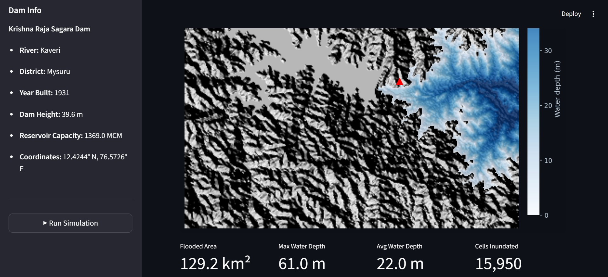

FloodSim
Dam breach flood inundation simulation and visualisation for disaster risk management in Karnataka, India
| Type | Web-based Desktop Application |
| Stack | Python, Streamlit |
| Status | Active Development — Core simulation functional |
| Study Area | KRS Dam (Krishna Raja Sagara), Kaveri River, Mysuru, India |
| Terrain Data | SRTM 30m DEM (real data) |
| Export | Google Earth KMZ for 3D visualisation |
Overview
Millions of people live downstream of major dams with no accessible way to understand their flood risk. The tools that model dam breach scenarios exist — but they are locked inside expensive engineering software used only by specialists. FloodSim was built to change that.
FloodSim is a desktop web application that simulates the maximum flood inundation extent of a dam breach scenario for the Krishna Raja Sagara (KRS) Dam on the Kaveri River, Mysuru, India. It fetches real SRTM 30m terrain data, computes flood extent using a bathtub inundation model based on reservoir volume and terrain connectivity, and visualises the affected area as an interactive map with water depth overlays — exportable directly to Google Earth as a KMZ file for 3D visualisation and emergency planning.
The immediate purpose is public awareness: to show which villages, towns, and infrastructure would be inundated if a dam fails, giving local governments and NGOs visual evidence for emergency preparedness planning. The long-term vision is to scale this to cover all major dams older than 50 years — starting in Karnataka and eventually globally — democratising flood risk information that is currently inaccessible to the communities who need it most.

FloodSim simulation of KRS Dam breach — 129.2 km² flooded area, 61.0 m max water depth, 15,950 cells inundated
Key Features
- Real terrain data — fetches SRTM 30m DEM automatically for the KRS Dam region
- Bathtub inundation model — computes maximum flood extent based on reservoir volume and terrain connectivity
- Interactive map — water depth overlay with colour-coded inundation zones
- Impact metrics — flooded area (km²), max water depth (m), average water depth (m), cells inundated
- Google Earth export — KMZ file for 3D visualisation and field planning
- Dam info panel — reservoir capacity, dam height, coordinates, river and district data
Current Status & Roadmap
Core simulation, terrain visualisation, impact metrics, and Google Earth export are fully functional. The current model uses a simplified bathtub inundation approach — temporal flood progression modelling using full 2D Saint-Venant equations is planned for v2.0. Future development includes expanded DEM coverage downstream toward Mandya, population impact data, infrastructure at risk mapping, AI-assisted evacuation route planning, and multi-dam support across Karnataka.